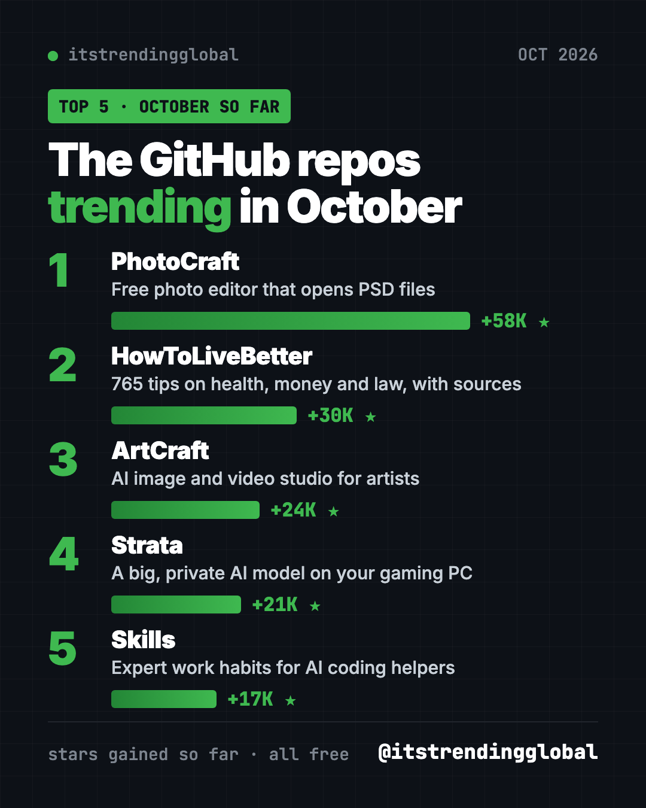
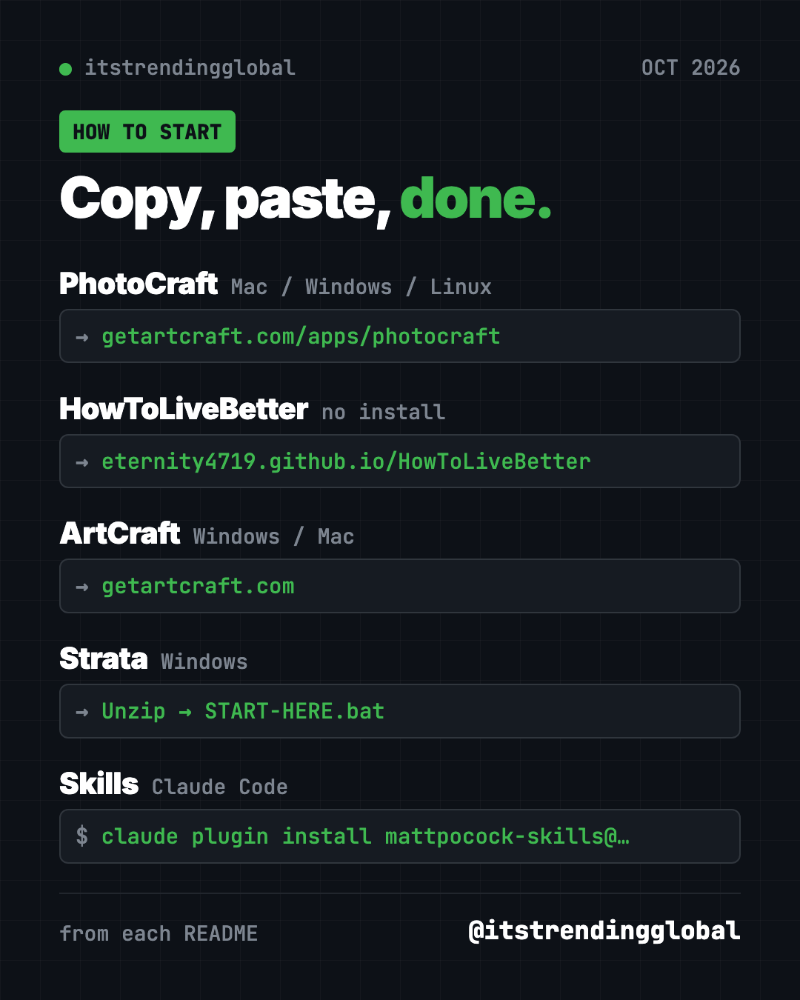
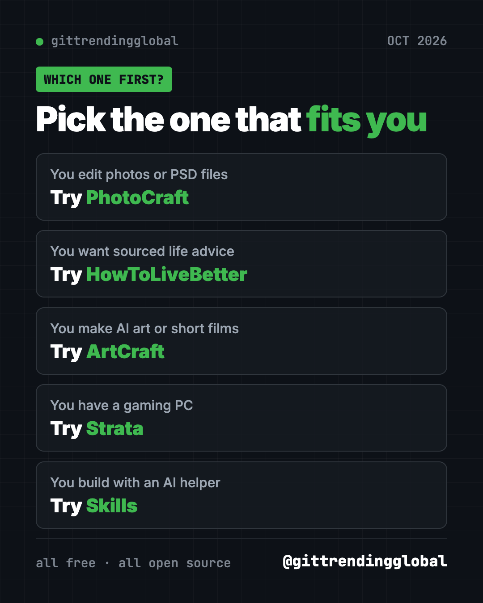

Trending GitHub Repos October 2026: The Top 5 So Far
- Published 16 Oct 2026
- 10 min read
- By the ITG Now team
In this guide (9)
- Key takeaways
- The trending GitHub repos of October 2026 at a glance
- 1. PhotoCraft: a free photo editor that opens Photoshop files
- 2. HowToLiveBetter: a sourced guide to health, money and law
- 3. ArtCraft: an AI art studio with real control
- 4. Strata: a big, private AI model on your gaming PC
- 5. Skills: expert work habits for your AI helper
- Which one should you try first?
- FAQ
The trending GitHub repos October 2026 has produced so far are PhotoCraft, HowToLiveBetter, ArtCraft, Strata and Matt Pocock's Skills. October is only half over, so this list can still change. All five are free and open source.
A GitHub star is like a bookmark or a "like." October is a month for makers. Two of the top five come from the same team of artists: a Photoshop-style photo editor and an AI art studio. Another lets a normal gaming PC run a huge AI model with nothing sent online. For each one you get everyday uses, the exact setup, and a prompt for your AI helper.
Key takeaways
- PhotoCraft leads October 2026 so far, with about 58,000 new stars. It is a free photo editor that opens real Photoshop files.
- HowToLiveBetter, a sourced Chinese guide to health, money and law, is trending for a second month.
- ArtCraft is a free studio for making AI images and video with real control over the scene.
- Strata runs a 125-billion-parameter AI model on a gaming PC, privately.
- Skills by Matt Pocock is back in the top 5 again.

The trending GitHub repos of October 2026 at a glance
| Repo | What it does | Who it's for | Free? | Platforms |
|---|---|---|---|---|
| PhotoCraft | Photoshop-style editor that opens PSD files | Photographers, designers, hobbyists | Yes (MIT or Apache-2.0) | macOS, Windows, Linux, FreeBSD, web |
| HowToLiveBetter | 765 sourced life tips on health, money and law | Chinese readers, evidence fans | Yes (CC BY 4.0) | Web, PDF, EPUB |
| ArtCraft | AI image and video studio with 2D and 3D scene tools | Artists, filmmakers, designers | App is free (MIT or Apache-2.0) | Windows, macOS, Linux from source |
| Strata | Runs a big AI model on your gaming PC | Gamers, privacy fans, coders | Yes (MIT) | Windows, Linux, Mac experimental |
| Skills | Proven work habits for AI coding helpers | Anyone building with AI | Yes (MIT) | Claude Code, Codex, Copilot, Gemini CLI |
Star gains are for October 2026 so far. Total star counts below were checked on GitHub on October 16, 2026.
💡 Tip: Some steps use the "terminal," a plain text window where you type commands. On a Mac, open Terminal. On Windows, open PowerShell. Paste a line, press Enter, and wait.
1. PhotoCraft: a free photo editor that opens Photoshop files
Stars: +58K so far in October · about 63K total
What it is: PhotoCraft is a free, open-source photo editor built from scratch by the ArtCraft team. If you know Photoshop, the menus and shortcuts will feel familiar. It has layers, masks, adjustment layers, text, shapes and brushes, and its README lists 67 tools. It opens, edits and saves real layered PSD files. It runs offline on your own computer, with no account. It went public on GitHub on September 30, 2026.
Who it's for: Hobby photographers, designers, students and anyone who wants Photoshop-style editing without a subscription.
How you'd use it:
- Open an old PSD from a designer and change the text without Photoshop.
- Fix the color in a photo with Curves or Levels, without touching the original pixels.
- Cut out a subject with Select Subject, which runs on your computer.
Install it: The easiest way is the PhotoCraft download page. Builds for Mac, Windows, Linux and the web are also on the GitHub releases page. Want to build it yourself? Install Rust, then copy and paste this:
git clone https://github.com/storytold/photocraft
cd photocraft
cargo run --release -p photocraft -- image.psd
Or let Claude or Codex do it: Claude Code and OpenAI Codex are AI helpers that can run setup steps for you. Paste this:
Download and install the latest PhotoCraft release for this computer from
https://github.com/storytold/photocraft/releases/latest. Pick the right file
for my system, check it against SHA256SUMS.txt, and open the app.
⚠️ Heads up: The README says PhotoCraft is in early alpha. It is not yet a Photoshop replacement for daily professional work.
See PhotoCraft on GitHub · Read the full guide
2. HowToLiveBetter: a sourced guide to health, money and law
Stars: +30K so far in October · about 64K total
What it is: HowToLiveBetter is a free online book, not an app. It holds 765 tips on living longer, first aid, saving money, legal red lines, losing a job, family and starting a business. Each tip says what it costs you, what you get back, and how strong the evidence is. Sources are only journal papers and official documents. It was also a top repo in September.
Who it's for: People who read Chinese and want evidence-based life advice. The legal and social security parts follow mainland China's rules.
How you'd use it:
- Check whether a health habit or checkup package is worth the money.
- Take the yes-or-no "life self-check" to find easy wins.
- Look up what help you can claim after losing a job in mainland China.
Install it: No install. Open the online search page and use your browser's translate button if needed. It also comes as a PDF or EPUB.
Or let Claude or Codex do it: The project ships a skill so an AI helper answers from the book. For Claude Code, copy and paste this:
mkdir -p ~/.claude/skills/life-decision-guide && curl -fsSL -o ~/.claude/skills/life-decision-guide/SKILL.md "https://raw.githubusercontent.com/eternity4719/HowToLiveBetter/main/skills/life-decision-guide/SKILL.md"
Then ask:
Use life-decision-guide to answer in English: is a two-hour daily commute
worth it for a higher salary? Tell me which section and item you used.
For real legal or medical problems, follow your local officials, doctor or lawyer.

3. ArtCraft: an AI art studio with real control
Stars: +24K so far in October · about 29K total
What it is: ArtCraft calls itself "the IDE for artists." It is a desktop studio for making AI images and video. Instead of only typing prompts, you build the scene first. You can place 3D props, pose characters, set the camera, cut out backgrounds and compose layers. Then you pick the AI model that fits. Its README lists a catalog of 62 models for images, video, music, 3D and worlds. The project started back in 2022 and is trending now.
Who it's for: Artists, illustrators, filmmakers and designers who want repeatable results, not lucky prompts.
How you'd use it:
- Pose a character and set the camera angle before generating the final shot.
- Keep the same room and actors across several shots of a short story.
- Turn a still image into a short video with the model of your choice.
Install it: Download it for Windows or Mac from getartcraft.com, or grab the latest build from the ArtCraft releases page. Linux users build it from source.
Or let Claude or Codex do it:
Help me install ArtCraft from https://github.com/storytold/artcraft for this
computer. Then read its README and explain in plain words which AI models it
supports and what I need to check about cost before generating.
⚠️ Heads up: The app is free and open source. The README does not list what generating with each AI model costs, so check inside the app before you start.
4. Strata: a big, private AI model on your gaming PC
Stars: +21K so far in October · about 25K total
What it is: Strata lets a normal gaming PC run Qwen3.8-Flash-Next, a 125-billion-parameter AI model that usually needs a server. It chats, writes code, reads pictures and works with your apps. Nothing leaves your PC. You need an NVIDIA or AMD graphics card with 12 GB or more, at least 32 GB of RAM and about 80 GB of free disk.
Who it's for: Gamers with a strong PC, privacy fans, and coders who want a free local model for their AI tools.
How you'd use it:
- Chat with a strong AI that never sends your words online.
- Connect Claude Code or Codex to it instead of a paid model.
- Ask it about a photo or a screenshot, offline.
Install it: Download Strata from its GitHub page and unzip it. On Windows, double-click START-HERE.bat. On Linux, copy and paste this inside the Strata folder:
./setup.sh
Press Enter for the recommended answers. It downloads about 70 GB, then opens http://127.0.0.1:8080 in your browser.
Or let Claude or Codex do it: The README includes its own prompt:
Set up Strata on this PC for me: https://github.com/Niko1221/Strata - follow docs/AI_SETUP.md in that repository.
⚠️ Heads up: The README warns that your PC may be slow or stop responding for 1 to 3 minutes while the model starts. That is normal. Don't close the window.
See Strata on GitHub · Read the full guide
5. Skills: expert work habits for your AI helper
Stars: +17K so far in October · about 293K total
What it is: Matt Pocock's small, proven skills for AI coding helpers. /grill-me makes the AI question you until your plan is clear. It has made our monthly top 5 again and again this year.
Who it's for: Anyone whose AI helper builds the wrong thing.
How you'd use it:
- Run
/grill-mebefore any new project. - Use
/teachto learn a new topic over several sessions.
Install it: For Claude Code, copy and paste this:
claude plugin install mattpocock-skills@claude-plugins-official
Or let Claude or Codex do it:
Install Matt Pocock's skills from https://github.com/mattpocock/skills
following the README for this agent, then run setup-matt-pocock-skills.
See Skills on GitHub · Read the full guide
Which one should you try first?
- You edit photos or open PSD files: start with PhotoCraft.
- You want practical life advice backed by research: read HowToLiveBetter.
- You make AI art or short films: try ArtCraft.
- You have a gaming PC and want private AI: try Strata.
- You build with an AI coding helper: add Skills.

Brand new to all this? PhotoCraft is a normal download. HowToLiveBetter needs only a browser.
For the bigger picture, read October 2026 in AI. You can also look back at September's top repos or the 5 biggest GitHub repos of Q3 2026.
FAQ
What are the trending GitHub repos of October 2026?
So far, the top five by stars gained are PhotoCraft, HowToLiveBetter, ArtCraft, Strata and Matt Pocock's Skills. October is not over, so the order can still change.
Is PhotoCraft a free Photoshop alternative?
It is free, open source and opens real PSD files. Its README says it is in early alpha and not yet ready to replace Photoshop for daily professional work.
Can my PC run Strata?
You need an NVIDIA or AMD graphics card with at least 12 GB of video memory, 32 GB of RAM and about 80 GB of free disk. Mac support is experimental.
Is ArtCraft free?
The app is free and open source. The README does not list prices for the AI models it connects to, so check in the app before you generate.
What does "stars gained" mean?
A GitHub star is like a bookmark. Stars gained is how many new stars a project got this month. It shows what people are excited about right now.
Keep reading

Trending GitHub Repos This Week, Oct 5 2026: The Top 5
Trending GitHub repos this week Oct 5 2026: Matt Pocock's skills, the openGym workout tracker, e2e testing, HyperFrames video and claude-mem memory.

GitHub Trending September 28, 2026: Hindsight and Paperclip
GitHub trending September 28 2026: Hindsight, Paperclip, NVIDIA's OpenShell and a free 542-lesson AI course, with setup steps for each.

Best GitHub Repos Q3 2026: The 5 Biggest of the Quarter
The best GitHub repos of Q3 2026 (July to September): DeepSeek's AI agent, AI diagrams, expert coding skills and a sourced life guide, explained simply.